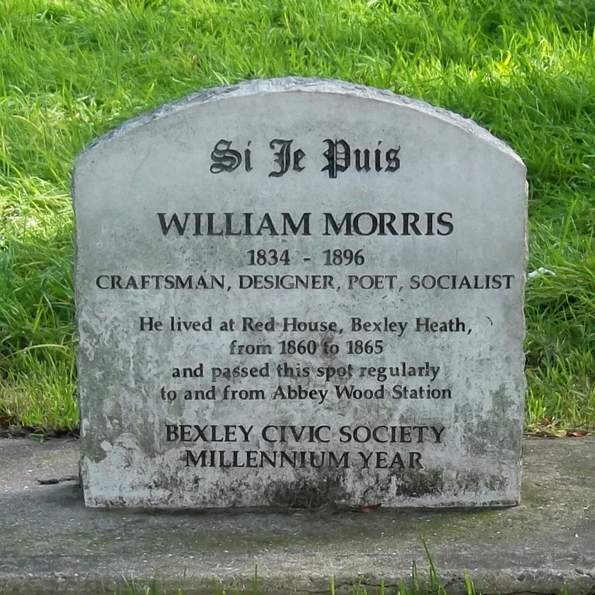

Welcome to this portfolio of selected artwork by William Morris! Use the navbar to explore information about and textile prints by the influential British artist. Hover over artworks to increase size.
"William Morris (24 March 1834 - 3 October 1896) was a British textile designer, poet, artist, writer, and
socialist activist associated with the British Arts and Crafts movement. He was a major contributor
to the
revival of traditional British textile arts and methods of production. His literary contributions helped to
establish the modern fantasy genre, while he helped win acceptance of socialism in fin de siècle Great
Britain. Morris was born in Walthamstow, Essex, to a wealthy middle-class family. He came under the strong
influence of medievalism while studying classics at Oxford University, where he joined the Birmingham Set.
After university, he married Jane Burden, and developed close friendships with Pre-Raphaelite artists Edward
Burne-Jones and Dante Gabriel Rossetti and with Neo-Gothic architect Philip Webb. Webb and Morris designed
Red House in Kent where Morris lived from 1859 to 1865, before moving to Bloomsbury, central London. In
1861, Morris founded the Morris, Marshall, Faulkner & Co. decorative arts firm with Burne-Jones,
Rossetti,
Webb, and others, which became highly fashionable and much in demand. The firm profoundly influenced
interior decoration throughout the Victorian period, with Morris designing tapestries, wallpaper, fabrics,
furniture, and stained glass windows. In 1875, he assumed total control of the company, which was renamed
Morris & Co.
Morris rented the rural retreat of Kelmscott Manor, Oxfordshire, from 1871 while also retaining a main home
in London. He was greatly influenced by visits to Iceland with Eiríkur Magnússon, and he produced a series
of English-language translations of Icelandic Sagas. He also achieved success with the publication of his
epic poems and novels, namely The Earthly Paradise (1868-1870), A Dream of John Ball
(1888), the Utopian
News from Nowhere (1890), and the fantasy romance The Well at the World's End (1896). In
1877, he founded
the Society for the Protection of Ancient Buildings to campaign against the damage caused by
architectural
restoration. He was influenced by anarchism in the 1880s and became a committed revolutionary socialist
activist. He founded the Socialist League in 1884 after an involvement in the Social Democratic
Federation
(SDF), but he broke with that organisation in 1890. In 1891, he founded the Kelmscott Press to
publish
limited-edition, illuminated-style print books, a cause to which he devoted his final years.
Morris is recognised as one of the most significant cultural figures of Victorian Britain. He was best known
in his lifetime as a poet, although he posthumously became better known for his designs. The William
Morris
Society founded in 1955 is devoted to his legacy, while multiple biographies and studies of his
work have
been published. Many of the buildings associated with his life are open to visitors, much of his work can be
found in art galleries and museums, and his designs are still in production." - Wikipedia
"Acanthus and Vine" tapestry, 1879
"Peacock and Dragon" textile, 1878
"Pimpernel" wallpaper, 1876
"Snakeshead" wallpaper, 1876
"Strawberry Theif" textile, 1883
"Hyacinth" wallpaper, 1917
Send any inquiries to: St George's churchyard, Kelmscott, Lechlade GL7 3HG, United Kingdom
